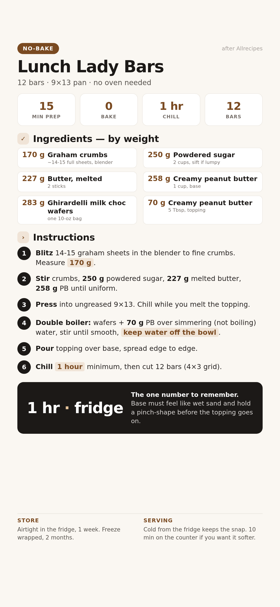

Crunchy graham-and-peanut-butter base under a thick milk-chocolate layer, the way the cafeteria lady made them. One 9×13 pan, 12 bars, zero baking.

📱 For your phone — tap to open the full-size card, then save it to Photos.
For 12 bars in a 9×13 pan. Grams lead; volume in the small line.
Weigh if you can. Set the bowl on the scale, tare between ingredients, go by grams.
Break ~14-15 full graham sheets in half, drop them into the blender, and pulse to a fine crumb — about 20 seconds of pulses, not one long blend. Weigh out 170 g.
What to expect: sand-fine crumbs with no visible sheet chunks. A few big pieces just means another 2-3 pulses.
Watch for: a blender motor working hard with a very dry load — stop and shake the jar gently between pulses so the crumbs settle into the blades.
In a medium bowl, stir together 170 g crumbs, 250 g powdered sugar, 227 g melted butter, and 258 g peanut butter until every bit of dry powder is gone.
What to expect: thick, uniform, and moldable — like stiff cookie dough. It should hold together when squeezed.
Stop: if it's still powdery after 2 minutes of stirring, your butter wasn't fully melted or the PB was cold from the fridge. Warm the PB 10 seconds and re-mix before adding anything.
Tip the mix into an ungreased 9×13 pan. Press it firmly and evenly with the back of a spoon — corners first, then the middle. Refrigerate while you make the topping.
What to expect: a level, packed surface that doesn't shift when you tilt the pan. Loose corners crack later.
Add an inch or two of water to a pot and bring it to a bare simmer. Set a heatproof bowl on top so the bottom hovers above the water — the bowl never touches the water itself.
Stop: one drop of water in the chocolate makes it stiff and grainy. Keep the water at a simmer, not a boil, and don't let steam pool under the bowl — wipe the rim dry if needed.
Add 283 g wafers and 70 g peanut butter to the bowl. Stir often as they soften; pull the bowl off the heat when a few lumps remain and let the residual warmth finish the job.
What to expect: glossy, pourable, completely smooth — no streaks. Wafers melt faster and smoother than chips, so this takes 5-8 minutes, not 15.
Pour the warm topping straight onto the chilled base and spread it edge to edge with the spatula. Work at a steady pace — it starts setting as it cools.
What to expect: it self-levels within a few seconds of each spread. If it's dragging instead of flowing, warm it over the pot for another 15 seconds.
Refrigerate at least 1 hour until the top is set firm. Cut into 12 bars — 4 across, 3 down.
What to expect: clean edges. If the chocolate shaves instead of cracking, chill another 15 minutes.
Water got into the chocolate. Next time: lower simmer, wipe the bowl rim, and keep every drop of water out of the bowl.
The bowl sat too long off the heat. Pour immediately after melting, and re-warm over the pot 15 seconds if it starts dragging.
Under-pressed or under-measured butter. Press harder next time (spoon, not fingers) and confirm the butter at 227 g, not eyeballed.
Not fully set. Chill another 15-20 minutes, and warm the knife under hot water between cuts.